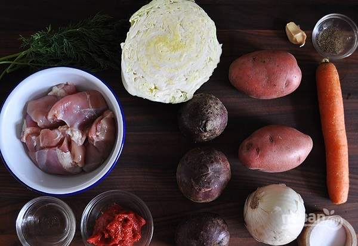
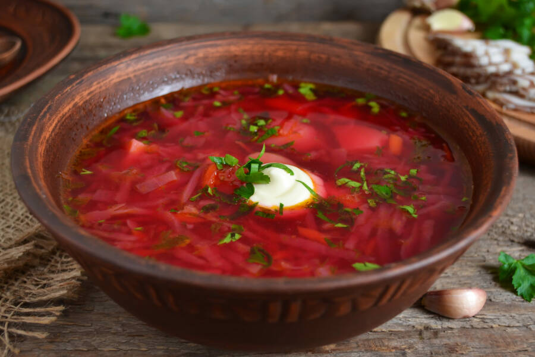
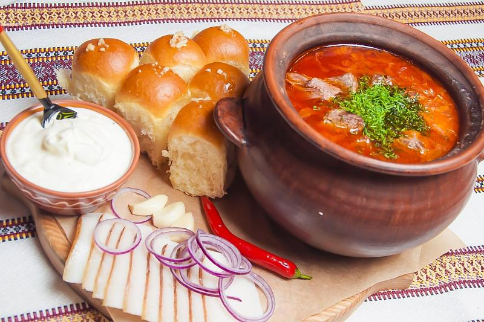

На 8-10 порций красного борща понадобятся следующие ингредиенты:
3 л воды;
400 г говядины;
400 г картофеля;
300 г свеклы;
100 г моркови;
20 г репчатого лука;
1 долька чеснока;
200 г белокочанной капусты;
30 г растительного масла;
100 г томатной пасты;
4 г столового уксуса;
5 г сахара;
соль, черный перец молотый, лавровый лист по вкусу.

Классический борщ — трудоемкое блюдо. Его приготовление разбито на несколько этапов и занимает от трех
до пяти часов. При желании можно уложить весь процесс в полтора–два часа, не изменяя традициям.
В хорошо прогретой глубокой кастрюле на растительном масле две-три минуты обжаривайте
нарезанные соломкой лук и чеснок. Добавьте говядину, нарезанную кубиком, и обжарьте до золотистой
корочки.
Залейте смесь водой и доведите до кипения. Убавьте огонь до минимума и снимите шумовкой образовавшуюся пену.
Добавьте кубики картофеля, шинкованную капусту и натертую морковь. Варите 20 минут или до готовности овощей.
Отдельно на сковороде с растительным маслом слегка обжарьте натертую на крупной терке свеклу. Добавьте к
ней смесь томатной пасты и 100 мл мясного бульона. Тушите 10 минут.
Влейте свеклу к томатной пасте в кастрюлю с будущим супом. Варите на медленном огне 10 минут, не давая
закипеть, чтобы свекла не утратила рубиновый цвет.
Заправьте суп уксусом, сахаром, солью и перцем. Выключите огонь, накройте кастрюлю крышкой и дайте
настояться в течение часа. Перед подачей украсьте сметаной и рубленой зеленью.

